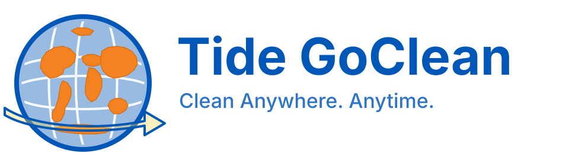
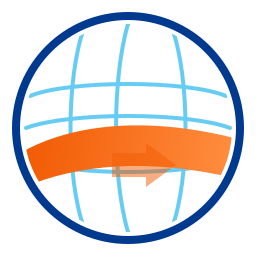
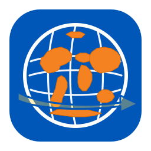

Primary Logo
Circular globe symbol with subtle global grid, orange Tide wave, and forward arrow for progress. Built to scale across app icons, stations, product packaging, and keychain device branding.
Theme: Global Cleaning for the Future.

Circular globe symbol with subtle global grid, orange Tide wave, and forward arrow for progress. Built to scale across app icons, stations, product packaging, and keychain device branding.
#F25C05#003A8F#4CC3F1
Use this mark where space is tight or icon-first branding is preferred.

Deep blue background with the globe symbol, orange wave, and white arrow for high small-size readability.
This sequence reinforces cleaning in motion and future-forward technology.